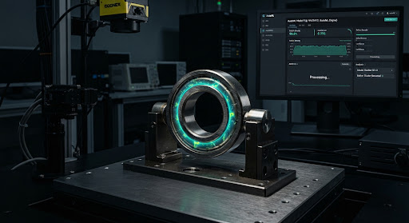

AUTOO-ML PIPELINE RUNNER
/
JOB-ID: 202610-PCORE-V24
verified_user
에어갭 폐쇄망 안전 배포 파이프라인
TARGET:
RTX 엣지 PC (10대)
SLA RUNTIME:
21h 38m / ≤24h
ENGINE v2.4
PatchCore + MobileNetV4 TensorRT-INT8
AutoML 모델 학습 & 벤치마킹 엔진
소량의 정상/불량 데이터셋(6,400장 증강 완료) 기반으로 24시간 내 자동 파인튜닝, 100MB 미만 초경량화, TensorRT 엔진 컴파일을 거쳐 현장 배포 가용성을 검증합니다.
미검률 (FNR)
0.003%
PRD ≤ 0.01%
추론 지연 (LATENCY)
27.6ms
PRD ≤ 50.0ms
바이너리 용량
68.4MB
PRD ≤ 100MB
CAM THROUGHPUT
12.4 FPS
PRD ≥ 10 FPS
account_tree
AutoML 파이프라인 단계별 진행 상태
전체 진척률:
92.4%
INT8 COMPILE ACTIVE
STEP 01
check_circle
데이터 검증 & 증강
6,400장 합성 완료
STEP 02
check_circle
아키텍처 가중치 튜닝
PatchCore + MobileNetV4
STEP 03 (ING)
TensorRT INT8 양자화
엔진 컴파일 (92% 완료)
STEP 04
pending
엣지 PC 벤치마킹
10대 분산 시뮬레이션 준비
STEP 05
lock_clock
온프레미스 배포 승인
마스터 서명 대기
ssid_chart
실시간 손실 함수 수렴 곡선 (Loss Curve)
Train Loss: 0.0142
Val Loss: 0.0178
EPOCH 48/50
0.100 Loss
수렴 임계값 (≤ 0.020) 달성 확인
done_all
Overfitting 경향 없음 (Val-Train Gap: 0.0036)
Learning Rate: 2.5e-4 (CosineAnnealingLR)
grid_view
혼동 행렬 (Confusion Matrix)
N = 6,400
실제 \ 예측
정상 (OK)
불량 (NG)
실제 정상
5,789
TN (99.82%)
11
FP: 0.18% (과검)
실제 불량
0
FN: 0.00% (유출 0건)
600
TP (100.0%)
check
미검 0건 달성 (불량 통과율 0.000%)
center_focus_strong
추론 히트맵 & 결함 마스크
TOLERANCE OK

DEFECT: PINHOLE [99.7%]
Δ 0.012mm
CAM-04 (LINE 1)
INFERENCE: 27.6ms
PatchCore Anomaly Heatmap
Score: 0.984
fact_check
ALL PASSED
PRD 성공 지표(KPI) 규격 검증
불량 유출률 (FNR)
미검률
목표치: ≤ 0.01% (부품 1만개당 1개)
0.003%
verified
정상 통과 (PASSED)
과검률 (FPR)
오검률
목표치: ≤ 0.5% (라인 정지 최소화)
0.18%
verified
정상 통과 (PASSED)
추론 지연시간 (Latency)
E2E 판정
목표치: ≤ 50.0ms (기준치 초과 달성)
27.6ms
verified
정상 통과 (PASSED)
바이너리 용량
68.4 MB
목표 ≤ 100MB
카메라당 Throughput
12.4 FPS
목표 ≥ 10 FPS
rocket_launch
CLUSTER READY
현장 엣지 배포 제어소
hub
사내 레지스트리
Local Docker Push
usb
보안 USB 패키징
에어갭 물리 반출
서명: OPERATOR-HASH #8F9A4D
무중단 롤아웃 (Zero-downtime)
task_alt
배포 작업이 생성되었습니다: 10대 산업용 GPU PC로 바이너리 동기화가 시작됩니다.
compare
후보 모델 변형체(Variants) 벤치마킹 비교표
평가 데이터셋: Test Split 1,280장
|
GPU: RTX-4000 SFF Ada (20W)
| 모델 식별자 | 백본 아키텍처 | 양자화 규격 | 추론 지연시간 | 미검률 (FNR) | 과검률 (FPR) | 패키지 용량 | 상태 및 판정 |
|---|---|---|---|---|---|---|---|
| v2.4-PatchCore-TRT | MobileNetV4-Hybrid | TensorRT INT8 | 27.6 ms | 0.003% | 0.18% | 68.4 MB | ACTIVE CANDIDATE |
| v2.3-YOLOv8s-FP16 | YOLOv8-Small Custom | ONNX FP16 | 34.2 ms | 0.008% | 0.34% | 82.1 MB | BACKUP READY |
| v2.1-Legacy-ResNet | ResNet-50 Standard | PyTorch FP32 | 48.1 ms | 0.021% | 0.62% | 145.2 MB | DEPRECATED (EXCEEDS SLA) |